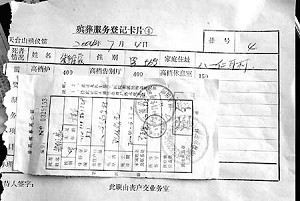

28/3/06
Tác giả Quý Đạt
Thời báo Đại Kỷ nguyên
17/03/2006
Nhân chứng, đã từng là một nhân viên làm việc tại Trung tâm điều trị nghẽn mạch máu bằng phương pháp Đông-Tây y kết hợp tỉnh Liêu Ninh, nói rằng cơ thể của các học viên Pháp Luân Công bị hoả thiêu ngay sau khi các bộ phận bị cắt mang đi. (Thời báo Đại Kỷ nguyên)
Một người đã từng làm việc tại Trung tâm điều trị nghẽn mạch máu bằng phương pháp Đông-Tây y kết hợp tỉnh Liêu Ninh nói với Thời báo Đại Kỷ nguyên trong một cuộc phỏng vấn gần đây rằng Trại tập trung Tô Gia Đồn ở Trung Quốc thực ra là một bộ phận của một bệnh viện. Trại tập trung này cắt lấy đem bán các bộ phận cơ thể của các học viên Pháp Luân Công trong khi họ vẫn còn sống. Từ năm 2001, Trại tập trung này đã bí mật giam giữ khoảng 6000 học viên Pháp Luân Công, và không một ai trong số họ có thể ra khỏi trại mà vẫn còn sống. Bệnh viện này đã cắt lấy đi rất nhiều quả thận, gan và giác mạc của các học viên Pháp Luân Công. Sau khi bị lấy đi các bộ phận của cơ thể, các học viên bị quẳng vào lò đốt xác được gia công từ một cái nồi hơi. Tro xác của họ bị đổ đi cùng với than đã cháy.
Các bộ phận thân thể của 3/4 trong số 6000 người đã bị cắt lấy đi
Những người bị cắt lấy đi các bộ phận thân thể ở trong các trạng thái sức khoẻ khác nhau. Vì rất nhiều nạn nhân đã bị giam giữ bất hợp pháp nên không có bất cứ lệnh bắt hay giấy tờ gì để xác định danh tính của họ. Thông thường thì sau khi các bộ phận thân thể của họ bị cắt lấy đi không có ai đến nhận xác của họ. Đôi khi thi thể của họ bị những kẻ lừa đảo giả làm thân nhân của họ đến nhận và mang đi.
Khoảng 3/4 trong số 6000 người đã bị chết sau khi tim, thận, giác mạc hay da của họ bị cắt lấy đi; sau đó thân thể của họ thì bị thiêu. Nhân chứng này có người nhà đã tham gia vào việc cắt lấy các bộ phận thân thể của những học viên Pháp Luân Công, nói rằng khoảng 2000 học viên Pháp Luân Công vẫn còn đang bị giam giữ ở trong bệnh viện đó. Cô sợ rằng chính quyền Trung Quốc sẽ giết tất cả họ để phi tang bằng chứng.
Trung tâm điều trị nghẽn mạch máu bằng phương pháp Đông-Tây y kết hợp tỉnh Liêu Ninh nằm ở số 49 đường Tuyết Tùng, Tô Gia Đồn, Thành phố Thẩm Dương, Tinh Liêu Ninh, Trung Quốc. Đó là bệnh viện đầu tiên ở Trung Quốc chuyên về tim, mạch và não. Bệnh viện này có nhiều bộ phận bao gồm cả Bệnh viện Đại học Trung Y Truyền thống tỉnh Liêu Ninh và Trung tâm điều trị nghẽn mạch máu thành phố Thẩm Dương.
Các chi tiết về Trại tập trung Tô Gia Đồn
Diện tích của bệnh viện là 21087 mét vuông với diện tích xây dựng là 17564 mét vuông. Bệnh viện này có 460 nhân viên làm việc trong 24 khoa và 20 phòng chuyên môn. Thông tin từ phía chính phủ Trung Quốc cho thấy rằng bệnh viện này được thành lập tháng 12/1998, và trước kia được đặt tên là Viện nghiên cứu nghẽn mạch máu Thẩm Dương và Trung tâm điều trị nghẽn mạch máu tỉnh Liêu Ninh sử dụng Đông-Tây y kết hợp. Vào tháng 6/1998, nó đã được đổi tên thành Trung tâm y học cổ truyền Trung Quốc điều trị nghẽn mạch máu.
Bản tin thương mại buổi sáng Trung Quốc nói trong một tin ngày 4/7/2004 rằng một người nông dân đã chết bất thường ở Tô Gia Đồn, Thẩm Dương và sau đó đã bị hoả táng. Giấy chứng tử là do Trung tâm Trung Y điều trị nghẽn mạch máu ở Tô Gia Đồn cấp. Tin đó đã gây ra một chấn động ở Trung Quốc.

Một bản Giấy chứng tử. (Ảnh tư liệu của Thời báo Đại Kỷ Nguyên)
Dưới đây là đoạn ghi lại một buổi phỏng vấn của một phóng viên Thời báo Đại Kỷ Nguyên với một người đã từng làm việc ở Bệnh viện điều trị nghẽn mạch máu sử dụng Đông-Tây y kết hợp của tỉnh Liêu Ninh ở Tô Gia Đồn, Thành phố Thẩm Dương. Phóng viên đặt câu hỏi và người nhân viên cũ đó đã trả lời như sau.
Thời báo Đại Kỷ Nguyên (TBĐKN): Các nhân viên y tế của bệnh viện ở trong Trại tập trung có biết việc này hay không?
Trả lời: Bệnh viện này có một số ít các cán bộ quản lý và một số bác sĩ bí mật tham gia vào việc phẫu thuật để cắt lấy các bộ phận cơ thể. Một số nhân viên khác trong bệnh viện cũng biết về việc này, nhưng đây là điều tuyệt đối cấm kỵ [không được nói đến]. Tất cả mọi người đều sợ bị giết chết hoặc gặp rắc rối nên họ đều lảng tránh vấn đề đó. Chỉ có những bác sĩ được tin cẩn là được chọn làm phẫu thuật viên cho các ca mổ để cắt lấy các bộ phận thân thể.
TBĐKN: Có phải là các học viên Pháp Luân Công vẫn còn sống trong khi các bộ phận thân thể của họ bị cắt lấy đi không?
Trả lời: Các học viên Pháp Luân Công bị cầm tù ở đó chủ yếu là bị chuyển đến từ Nhà tù Đại Bi, Trại lao động cưỡng bức Mã Tam Gia, và các nhà tù khác ở Thẩm Dương, hoặc họ là các học viên Pháp Luân Công bị bắt ở các công viên hay tại nhà riêng. Bởi vì họ từ chối không từ bỏ tập Pháp Luân Công nên họ đã bị bắt mà không có một lệnh bắt người chính thức nào, và gia đình của họ cũng không biết tin tức gì về tình trạng của họ. Nhiều người thậm chí còn không có cả tên mình [được ghi lại]. Hơn nữa, bởi vì chính quyền Trung Quốc thực hiện chính sách “không ai phải chịu trách nhiệm” trong việc giết chết các học viên Pháp Luân Công nên những cái chết của các học viên Pháp Luân Công không phải là vấn đề lớn lắm đối với các nhà tù. Đảng Cộng sản Trung Quốc đàn áp Pháp Luân Công, [nhưng] họ lại bảo những nhân viên y tế này rằng các học viên Pháp Luân Công phải chết bởi vì họ giết người, hoặc là họ bị kết án tử hình vì họ đã phạm tội, hoặc là họ đã bị thần kinh do tập Pháp Luân Công
Những học viên Pháp Luân Công bị cắt lấy các bộ phận thân thể này đến từ nhiều nơi khác nhau. Những bộ phận lấy từ các cơ thể vẫn còn sống có giá trị hơn rất nhiều lần so với những bộ phận lấy từ các cơ thể đã chết. Nhiều học viên Pháp Luân Công vẫn còn sống trong khi các bộ phận thân thể của họ đang bị cắt để lấy đi. Sau khi các bộ phận thân thể của họ bị cắt rời ra khỏi cơ thể họ, một số người đã bị quẳng ngay vào lò thiêu xác nên không còn để lại bằng chứng gì. Còn đối với một số người khác thì sau khi các bộ phận thân thể của họ bị đánh cắp, bác sĩ khâu vết mổ lại và bảo gia đình hay người đại diện gia đình ký cho phép hoả thiêu. Thân nhân của họ hoàn toàn không biết rằng các bộ phận thân thể của người bị chết đã bị lấy cắp mang đi. Hơn nữa, có một số học viên Pháp Luân Công hoàn toàn khoẻ mạnh bị giam giữ ở trong các nhà tù ở các khu vực khác không biết rằng họ đã bị tiêm thuốc huỷ hoại hệ thần kinh làm cho họ trở nên bị lẫn lộn. Sau đó họ bị chuyển đến Trại tập trung Tô Gia Đồn và ở đó họ lại bị tiếp tục tra tấn cho đến cuối cùng thì các bộ phận thân thể của họ bị cắt lấy mang đi và thân thể họ bị bí mật thiêu huỷ.
Trong số các học viên Pháp Luân Công bị cắt lấy trộm các bộ phận thân thể thì có một số rất yếu và một số vẫn còn khoẻ mạnh. Bởi vì hầu hết trong số họ đã bị bắt giữ bất hợp pháp nên không có lệnh bắt hay chứng minh thư gì cả. Sau khi các bộ phận thân thể của họ bị cắt lấy mang đi trong khi họ vẫn còn sống, không có ai đến nhận xác của họ hoặc [đôi khi] có những người giả vờ là thân nhân của họ đến nhận xác mang đi.
Không một ai trong số những người này ra khỏi [Trại tập trung đó] mà còn sống; 3/4 trong số 6000 người này đã bị chết, tim, thận, võng mạc, và da của họ bị cắt lấy trộm mang đi, và thân thể họ thì bị thiêu huỷ. Tôi nghĩ rằng hiện giờ khoảng 2000 học viên Pháp Luân Công vẫn còn bị giam giữ ở trong bệnh viện này, và tôi sợ rằng giờ đây chính quyền [Trung Quốc] sẽ tiêu huỷ tất cả bằng chứng và giết họ.
Câu hỏi: Làm sao mà chị biết được những sự việc này?
Trả lời: Tôi đã từng làm việc ở Bệnh viện điều trị nghẽn mạch máu tỉnh Liêu Ninh sử dụng Đông-Tây Y kết hợp ở Thành phố Thẩm Dương. Đây chính là vị trí của Trại tập trung này. Một người nhà của tôi đã tham gia vào việc mổ lấy các bộ phận thân thể của các học viên Pháp Luân Công. Điều này đã làm cho gia đình tôi rất đau xót.
Câu hỏi: Đề nghị chị kể lại cho chúng tôi những gì mà chị biết
Trả lời: Từ năm 2001, bệnh viện nơi tôi làm việc đã bắt đầu giam giữ các học viên Pháp Luân Công. Đầu tiên, những người này bị giam giữ ở trong những ngôi nhà một tầng ở đằng sau bệnh viện. Sau đó, Ban lãnh đạo bệnh viện phá bỏ những ngôi nhà một tầng và không biết là các học viên Pháp Luân Công đã bị chuyển đến khu nào của bệnh viện. Nhiều nhân viên bệnh viện nói riêng với nhau rằng những học viên Pháp Luân Công này đã bị bí mật chuyển đến các các phòng ngầm dưới mặt đất của bệnh viện. Theo một số người làm việc ở trong bệnh viện thì bệnh viện này có một hệ thống phòng ngầm bí mật khổng lồ ở được xây dựng ở dưới mặt đất.
Vào lúc chúng tôi đến làm việc ở đó thì người phụ trách công việc hậu cần và mua vật tư của bệnh viện nói rằng số lượng găng tay tiệt trùng sử dụng một lần được dùng trong phẫu thuật và vật tư hàng ngày mà Ban lãnh đạo bệnh viện yêu cầu mua đã tăng đột biến. Những nhân viên hậu cần ước tính rằng dựa trên mức độ mua vật tư vào thời gian đó thì đã có ít nhất là 6000 học viên Pháp Luân Công bị giam giữ ở trong bệnh viện này.
Những học viên Pháp Luân Công này không bị giam giữ ở trong khu nhà 4 tầng thuộc khu vực dành cho bệnh nhân nội trú ở phía mặt trước của bệnh viện để các nhân viên bệnh viện không trông thấy họ. Chúng tôi chỉ thỉnh thoảng nhìn thấy các học viên Pháp Luân Công nằm ở trên các giường lưu động đặc biệt trên đường đi đến tầng 1 để khám sức khoẻ. Những người này rất là yếu. Đối với phần lớn các học viên Pháp Luân Công thì không ai biết được là họ đang bị giam giữ bí mật ở đâu. Vì họ không biết là những học viên này đang bị giữ ở đâu nên một số nhân viên hỏi Ban lãnh đạo bệnh viện là tại sao lại phải mua nhiều lương thực, thực phẩm và găng tay tiệt trùng cùng với đồ dùng hàng ngày đến như vậy. Lãnh đạo bệnh viện trả lời rằng “Hãy làm cho tốt công việc của mình và không cần phải hỏi gì cả”.
Bắt đầu từ năm 2001, một người nhà của tôi đã tham gia vào việc mổ để lấy các bộ phận thân thể. Ban đầu, người nhà tôi đã cố không để cho tôi biết về việc này. Lãnh đạo bệnh viện đã lựa chọn những bác sĩ mà họ tin cậy ở các phương diện khác nhau để thực hiện các ca mổ bí mật. Sau một thời gian, tôi đã phát hiện ra rằng người nhà tôi rất đau khổ, thường mơ thấy ác mộng, và trông có vẻ như là rất hoảng sợ. Sau khi tôi gặng hỏi nhiều lần, người nhà tôi đã nói cho tôi biết sự thật. Lãnh đạo bệnh viện đã bảo người nhà tôi tham gia vào việc mổ lấy các bộ phận thân thể của các học viên Pháp Luân Công ngay từ năm 2001. Cho đến năm 2003 thì người nhà tôi mới tiết lộ việc này. Một vài năm sau, người nhà tôi đã cảm thấy quá đau đớn vì phải tham gia làm việc này đến nỗi không thể tiếp tục làm công việc tàn ác đó được nữa. Người nhà tôi đã quyết định đi ra nước ngoài để thoát khỏi việc này.
Người nhà tôi cũng nói với tôi rằng: “mọi người không thể hiểu được nỗi khổ của tôi đâu; những học viên Pháp Luân Công đó vẫn còn sống. Có thể là mọi việc sẽ trở nên dễ dàng hơn cho tôi nếu như họ đã chết, nhưng đằng này họ vẫn còn sống.”
Câu hỏi: Có còn bác sĩ nào khác ở bệnh viện tham gia vào việc mổ cắt lấy các bộ phận thân thể của các học viên Pháp Luân Công nữa hay không?
Trả lời: Tôi biết có một số. Tất cả những sự việc này đều được thực hiện bí mật. Nhiều bác sĩ bệnh viện tham gia vào việc này là bác sĩ thực tập đến từ các bệnh viện khác. Bởi vì chính phủ không muốn chịu trách nhiệm đối với thân thể và sinh mạng của các học viên Pháp Luân Công nên chính quyền coi sinh mạng của họ như cỏ rác, và thân thể họ bị các bác sĩ mới ra trường đang đi thực tập dùng để thực hành.
Nhiều bác sĩ đến rồi rời khỏi bệnh viện vì họ đã phải chịu đựng quá nhiều sau khi tham gia vào những việc này. Hoặc là họ yêu cầu được chuyển đến nơi khác hoặc là đổi tên mình. Một số có thể đã bị giết để phi tang chứng, hồ sơ cá nhân của họ đã bị loại ra khỏi hệ thống hồ sơ lưu trữ của bệnh viện hoặc là tên của họ đã bị đổi. Không ai biết được là các bác sĩ đó đã đi đâu. Các nhân viên bệnh viện đều biết rằng khu vực ở phía sau bệnh viện là khu vực cấm. Luôn luôn có người canh gác ở đó. Các nhân viên đều tránh đề cập đến khu vực đó.
Câu hỏi: Nghe nói rằng bệnh viện này được trang bị một lò thiêu xác. Người bị mổ cắt lấy các bộ phận thân thể sẽ bị thiêu huỷ trong khi người đó vẫn còn sống. Có đúng như vậy không?
Trả lời: Các nhân viên bệnh viện gọi khu vực này là “lò thiêu”. Thực ra nó là một phòng đun nước sôi. Một số nông dân nghèo ở các khu vực lân cận đã được thuê để làm việc trong phòng đun nước sôi này. Họ nghèo không một xu dính túi khi họ mới đến đây. Nhưng họ có thể lấy một số đồng hồ, nhẫn, dây chuyền, v.v…Số lượng không phải là nhỏ. Các nhân viên bệnh viện nói rằng những đồ trang sức và đồng hồ này là họ lấy cắp của các học viên Pháp Luân Công đã bị cắt lấy đi các bộ phận thân thể khi họ chuẩn bị quẳng vào nồi đun nước để thiêu huỷ xác. Các nhân viên bệnh viện cũng nói rằng một số người vẫn còn sống khi họ bị quẳng vào nồi.
Câu hỏi: Họ có được tiêm thuốc gây mê trước khi bị mổ không?
Trả lời: Có. Có một định mức thuốc gây mê sử dụng ở các bệnh viện ở Trung Quốc. Nói chung là lượng thuốc gây mê được xác định tuỳ theo nhu cầu của bệnh viện. Đối với công chúng thì số lượng bệnh nhân mà chúng tôi điều trị có vẻ như rất ít, và số ca mổ mà chúng tôi thực hiện được công bố là rất nhỏ. Nhưng lượng thiết bị và dụng cụ dùng cho phẫu thuật là rất nhiều. Vì lượng thuốc gây mê là có hạn, nên những ca mổ bí mật này không thể sử dụng liều thuốc gây mê thông thường. Để tiết kiệm thuốc gây mê, họ đã giảm đến mức tối thiểu lượng thuốc gây mê dùng trong các ca mổ các học viên Pháp Luân Công. Lượng thuốc gây mê được dùng là rất nhỏ. Nhiều người bị mổ cắt lấy đi các bộ phận thân thể trong khi họ vẫn còn sống. Có thể tưởng tượng được là các học viên Pháp Luân Công này đã phải chịu đau đớn như thế nào.
Câu hỏi: Có ai sống sót trong số 6000 người bị giam giữ kể từ năm 2001 không?
Trả lời: Không một ai ra khỏi đó mà vẫn còn sống. Số lượng người [ở trong đó] cứ nhỏ dần. Các học viên Pháp Luân Công bị giam giữ ở Tô Gia Đồn hiện giờ đã ít hơn trước kia. Nhưng tôi tin rằng tội ác cắt lấy những bộ phận thân thể của các học viên Pháp Luân Công vẫn còn đang tiếp diễn.
Câu hỏi: Những bộ phận thân thể này thường được bán đi đâu? Các cấp chính quyền cao hơn có biết về việc này không?
Trả lời: Chủ yếu là bán sang Thái Lan, nhưng tôi tin rằng các bộ phận cũng được bán ở các khu vực khác trên thế giới. Ngày nay, có rất nhiều bệnh nhân ở Trung Quốc cần da, giác mạc và thận để phẫu thuật cấy ghép các bộ phận thân thể. Nhiều bệnh nhân phải xếp hàng chờ để mua các bộ phận. Hiện nay, một quả thận có thể được bán với giá 30000 cho đến 100000 đô-la Mỹ. Lợi nhuận từ việc bán các bộ phận đơn giản là quá lớn. Những người thu lợi từ việc này không chỉ là những người lãnh đạo cao nhất của các bệnh viện và các quan chức y tế của Đảng Cộng sản Trung Quốc. Đây là một tội ác đang diễn ra ở khắp nơi trên toàn quốc. Những người từ các quan chức chính phủ cho đến các bác sĩ và những người bán bộ phận đều tham gia vào việc này và đang thu lợi lớn.
Câu hỏi: Tại sao họ lại nhằm vào các học viên Pháp Luân Công như là nguồn bộ phận thân thể?
Trả lời: Bởi vì thân nhân của nhiều học viên Pháp Luân Công thậm chí không biết rằng người nhà của họ đã bị bắt giam. Do đó nếu các học viên Pháp Luân Công bị giết chết thì sẽ không có ai đến nhận xác.
Câu hỏi: Tại sao chị lại muốn vạch trần việc này? Nó có thể rất nguy hiểm cho chị.
Trả lời: Tôi biết rằng có rất nhiều học viên Pháp Luân Công hiện nay vẫn còn đang bị giam giữ ở bệnh viện này. Tôi muốn vạch trần sự việc này để cộng đồng quốc tế biết, để có thể cứu những người chưa bị giết chết. Tôi cũng muốn vạch trần việc này như là để chuộc tội cho gia đình tôi.
Tôi không phải là một học viên Pháp Luân Công. Nhưng với tư cách là một nhân viên cũ của bệnh viện đó, tôi có trách nhiệm phải đưa sự thật ra ánh sáng, và để thế giới cứu những học viên Pháp Luân Công vẫn còn sống. Các bộ phận thân thể của các học viên Pháp Luân Công vẫn còn sống ở trên cơ thể của các bệnh nhân. Tôi muốn kêu gọi toàn xã hội chú ý đến vấn đề này và giúp chấm dứt tội ác ghê rợn này.
{kind=link}
{kind=link}
{kind=link}